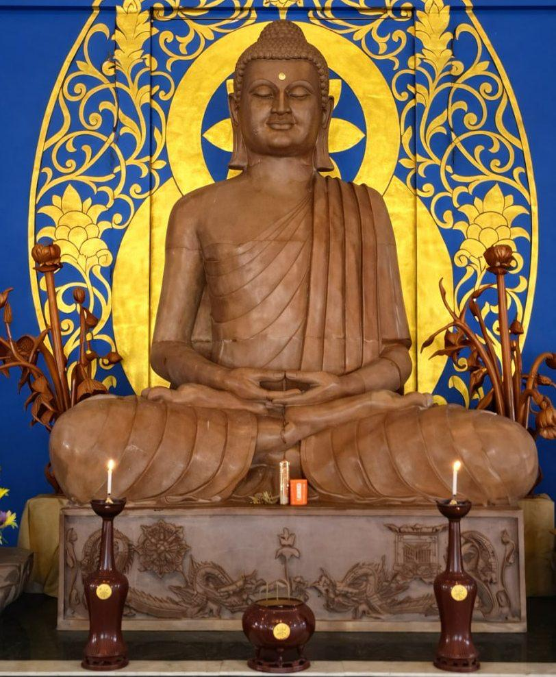

☸️'">
Pannya Metta Sangha
パンニャ・メッタ・サンガ
Wisdom · Compassion · Community
智慧・慈悲・共同体
☸️'">
Wisdom · Compassion · Community
智慧・慈悲・共同体
Pannya Metta Sangha
パンニャ・メッタ・サンガ
Walking the path of the Dhamma — nurturing wisdom, cultivating loving-kindness, and serving humanity through the timeless teachings of the Buddha.
ダンマの道を歩む — 智慧を育み、慈悲を培い、仏陀の永遠の教えを通して人類に奉仕します。
Our Inspiration
私たちのインスピレーション

🕉️Gautama Buddha
563 BCE – 483 BCE
563 BCE – 483 BCE
ガウタマ・ブッダ
紀元前563年 – 483年
紀元前563年 – 483年
The Awakened One
目覚めた者
Siddhartha Gautama attained enlightenment under the Bodhi tree at Bodh Gaya, becoming the Buddha — the Awakened One. His teachings of the Four Noble Truths and the Noble Eightfold Path offer a profound roadmap from suffering to liberation.
Buddhism spread throughout Asia and now encompasses many traditions worldwide, united by core values of compassion, mindfulness, and the pursuit of wisdom.
シッダールタ・ゴータマはブッダガヤの菩提樹の下で悟りを開きました。四聖諦と八正道は苦しみから解脱への道標を提供します。仏教はアジア全体に広まり、何十億もの人々に平和と内なる自由への霊感を与え続けています。
DhammaEnlightenmentCompassionNirvana
ダルマ悟り慈悲涅槃